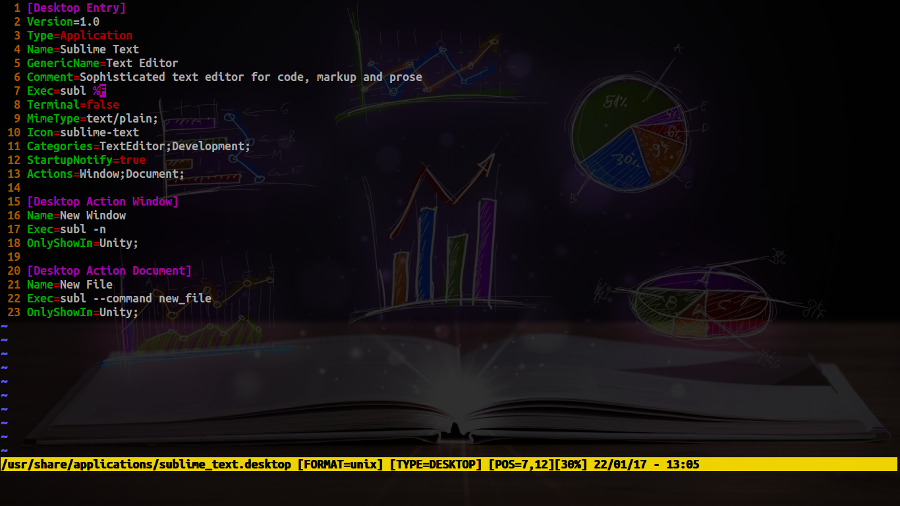
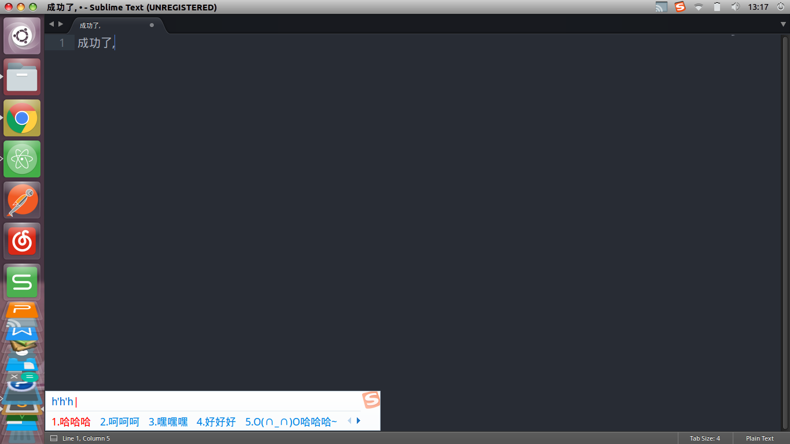

使用sublime时发现无法输入中文,网上的一些方法有些问题,所以自己研究了一种修改方法,终于修改成功了
首先要建立一个sublime_imfix.c文件
|
|
将上一步的代码编译成共享库libsublime-imfix.so
gcc -shared -o libsublime-imfix.so sublime_imfix.c `pkg-config --libs --cflags gtk+-2.0` -fPIC
然后将libsublime-imfix.so拷贝到sublime_text所在文件夹
sudo mv libsublime-imfix.so /opt/sublime_text_2/
修改文件/usr/bin/subl的内容
|
|
最后修改/usr/share/applications/sublime_text.desktop里的所有Exec如图所示

成功示例
